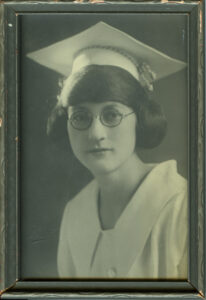
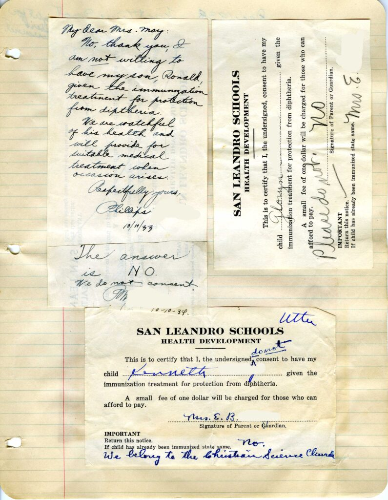

Clara Edmonston and Vivian Coats met as nursing students at UCSF in the 1920s. We have small collections from both women– MSS 2011-14 Vivian Coats (Edmonston) papers and MSS 2013-9 Clara Edmonston papers. The collections are full of insights into the lives of the two women in nursing school and as working nurses in the 1920s. Much of the collections is correspondence and documentation of their work, allowing the reader to hear Clara and Vivian’s voices and get to know them a bit.

Clara Edmonston, 1924.
Vivian Coats (Edmonston), 1923.
I recently had the opportunity to chat with Dr. Frances Edmonston, daughter of Vivian and niece of Clara, and she elaborated on their stories. Clara and Vivian were friends in nursing school and Clara had the idea to introduce Vivian (nee Coats) to her brother, Charles Edmonston. The match was a success– Vivian and Charles later married. Vivian finished her BS in Nursing in 1923, Clara in 1924. Vivian later went on to graduate in 1927 with a certificate in Public Health Nursing and continued to work in public health-related nursing roles in the Bay Area.
Vivian took care to save items that she felt represented her nursing career. She saved notes, newspaper clippings, official forms, correspondence, reports, and other memorabilia.

Vivian’s notes for making Poison Oak Lotion.

Vivian’s notes on the incubation period of infectious diseases.
She worked in a number of nursing capacities to help underserved populations. In 1929 Vivian was employed by the Red Cross in Willows, CA to provide Itinerant Nurse Service. Newspaper clippings collected by Vivian document the work that she accomplished and positive effect she had on the town.
In an April 30, 1929 report to the Red Cross on her work’s progress, Vivian wrote that “in the Willows Grammar School [she] examined 555 children and found 876 defects. These defects included faulty vision, carious teeth, throat abnormalities, skin eruptions, enlarged lymph nodes or glands in the necks, and those more than 10% underweight or 20% overweight.” Furthermore, she goes on to say that she “visited 19 rural schools examining a total of 392 children and found 837 abnormalities. Notice the greater number of defects in proportion to the number of children. If statistics are of any value as an indicator and guide, they surely point to the rural districts as needing prevention and correction of defects and health education.” A number of students were found to be in need of tonsillectomies and candidly she says, “I know many of the teachers will be relieved, next Fall, to see fewer mouth breathers and more nose breathers.”

Page 1 of newspaper clippings from Willows from February 16-May 1, 1929.
Vivian is very clear about the services that must be improved in the schools and the communities to have a positive impact on the health of the residents. Her recommendations include follow-up home visits, new outhouses at schools, bacteriological examination of drinking water, and updated health and anatomy curriculum in schools.
During my conversation with Frances she called my attention to the work Vivian did with vaccinations, which serves to illuminate some of the larger public issues of the early 20th century. For one position Vivian was loaned a model T Ford and hired to investigate cases of diphtheria. In the event that the presence of the disease was confirmed, Vivian had to put a quarantine sign on door of the home. Other duties included vaccinating children for diphtheria and small pox in the San Leandro area– which, it seems, were controversial among the parents. Vivian saved many of the notes from parents concerning the vaccinations.

Page 1 of a letter from a parent to the school teacher concerning vaccinations, circa 1934.

Page 2 of the letter from a parent to the school teacher concerning vaccinations, circa 1934.

A close-up of the portion of the letter discussing the diphtheria vaccination, circa 1934.
This History of Vaccines timeline provides a bit of context for Vivian’s work. Around 1922, many schools began requiring the students to be vaccinated for smallpox before they could attend. Similarly new diphtheria immunizations were introduced in the 1920s (and are credited with virtually wiping the disease out of the United States). Furthermore, it notes that in 1926 opposition to mandatory vaccinations was growing among the public. The same argument is echoing in many communities today.
Page of parents requesting that their children not be vaccinated at school, 1933-1934.


{kind=link}
{kind=link}
{kind=link}
{kind=link}
{kind=link}
{kind=link}